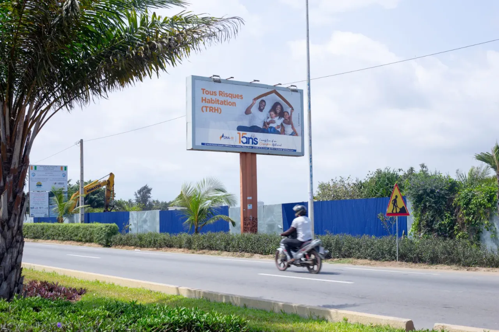

Inventaire média digitalisé
Les emplacements référencés par commune, axe, format et disponibilité.
Expertise 04 · Media Intelligence & pilotage de campagne
La Media Intelligence permet de passer d’une logique de diffusion à une logique de pilotage. Nos outils centralisent les informations liées aux emplacements, aux poses, aux périodes de diffusion et au suivi terrain, pour plus de transparence, de contrôle et de précision.

Photo horodatée et géolocalisée Pose vérifiéeCe que nous faisons
Mieux préparer les campagnes, mieux suivre leur exécution et capitaliser sur les données disponibles pour améliorer les décisions média.
Les emplacements référencés par commune, axe, format et disponibilité.
Zones et dispositifs recommandés selon vos objectifs, vos audiences et votre budget.
Des photos horodatées et géolocalisées associées à chaque opération de pose.
Les preuves de diffusion et un bilan clair, partagés avec vos équipes.
Une vue consolidée des campagnes en cours et des supports mobilisés.
Les données de campagne pour mieux choisir zones, formats et périodes.
De la pose à la preuve
Un plan média ne vaut que par ce qu’on peut en vérifier.
Définir ce qu’on va mesurer, et comment.
Relevés terrain, photos, dates, coordonnées.
Transformer les relevés en décisions.
La campagne suivante part de ce qu’on a appris.
Notre différence
Nous apportons la preuve avant qu’on nous la demande. Chaque face posée est photographiée, datée et localisée.
Pilotez votre prochaine campagne
Indiquez-nous vos objectifs, vos zones et votre calendrier : nous vous proposons un plan média et le suivi qui va avec. Réponse sous 24 heures ouvrées.